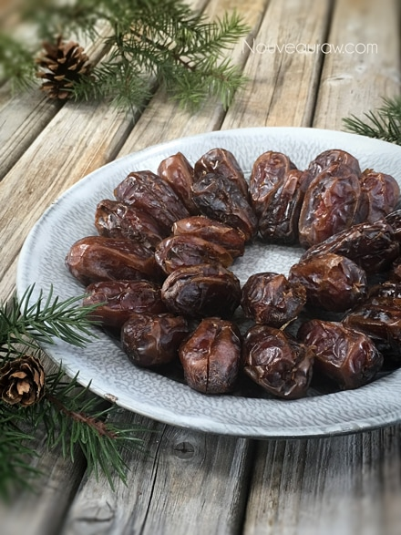
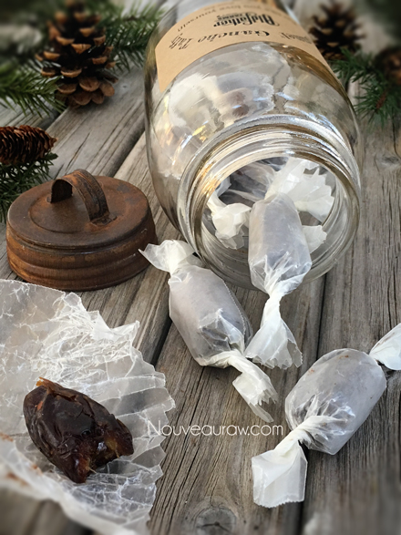
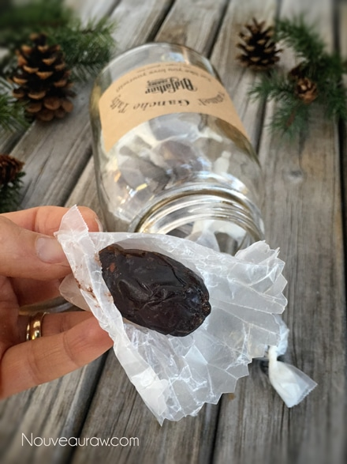

Caramel Ganache Taffy
 ~ raw, vegan, gluten-free, nut-free ~
~ raw, vegan, gluten-free, nut-free ~
This taffy candy recipe is part of the candy series that I developed for my grandparents. True lovers of all things sweet but now find it difficult to eat things that are hard and crunchy.
Besides, at the age of 84, it’s never too late to swap out the corn syrup-based candies for those made of whole food ingredients.
My grandmother is an itty-bitty thing, barely weighing over 100 lbs her whole life. The only reason I share this is that, for such a tiny lady, I would watch her down 6 full-size candy bars in one sitting when I was a little girl. She never really cared for food in general, but it was never advisable to get between her and a box of chocolates. hehe
I refer to these candies as taffy because to me they have a look and slight texture that you would find in commercially made taffy candy. Don’t hold me to that should you feel differently about my assessment, just roll with it and enjoy!
What I love about the two components that I brought together for this treat; Medjool dates and ganache… is the fact that neither one freezes solid when placed in the icebox. This means that they can be made well in advance for gift giving or just to have on hand for snacks or “pop-over” guests. There is someone knocking on our door several times a day (friends, neighbors, mailman, UPS man, electricians, orchard workers) you name it… and they ALL get treats. My husband makes sure of that.
The sound of door-knocking takes place, Bob answers it, Bob chats a bit, Bob comes in the kitchen searching aimlessly, “Looking for a treat babe? In the fridge, second self, right side, glass container with a red lid.” Bob seeks out the snack and returns to the front door. The door shuts, and life moves on. Actually, Amie Sue makes more treats. Hehe, I just love it.
Anyway, I ought to let you go. I can tell you are getting antsy in your seat and want to make these… go, go, let me know what you think by commenting below. Blessings, amie sue
Yields roughly 50 candies
- 3/4 cup raw dark agave syrup or maple syrup
- 3/4 cup raw cacao powder
- 1/3 cup raw cold-pressed coconut oil, melted
- 1/8 tsp Himalayan pink salt
- 50 large Medjool dates, pitted
Preparation:
- With a sharp knife, make a slit on one side of the date and remove the pit. Set aside.
- In a high-powered blender, combine the sweetener, cacao powder, coconut oil, and salt. Process until smooth.
- Scoop the ganache into a piping bag fitted with a round piping tip.
- Holding a date in your hand, pinch it open slightly. Place the piping tip inside of the date and gently squeeze. Be careful that you don’t overfill the date. You want to be able to close the date without ganache seeping out.
- Wrap individually in wax paper, twisting the ends close.
- These will keep fresh on the counter throughout the day but recommend storing in the fridge or freezer to extend their shelf life. They won’t freeze solid which makes them perfect for quick serving.


Serve on a platter for parties….

Or wrap individually for everyday pack n’ traveling.


It’s unfortunate that this picture couldn’t pick up the two
different layers of flavors; inside is filled with ganache. I
guys you will just have to trust me that they are amazing. Oh
forget that… go make some and you shall see for yourself.
© AmieSue.com